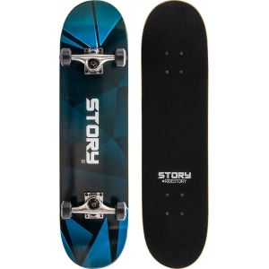

Avant, le skate était destiné à rester en marge de la société car les skateurs étaient considérés des personnes violentes, qui dégradaient les lieux publics. Aujourd'hui, le skate s’est imposé comme un sport à part entière, voire un style de vie. Présent dans la musique ou la mode, il est de nouveau d'actualité.
Des chansons du rappeur Lomepal aux nouvelles tendances vestimentaires, le skate est de plus en plus présent dans nos vies. Ce sport, un peu fermé en apparence, semble revenir en force dans la société ces dernières années. Depuis 2016, le skateboard est un sport olympique, mais au-delà de cette décision, il reste une source d’identité et porte une culture unique.
Le skate freestyle:
Appelé dans les années 1955 « roll-surf » (planche à surfer les trottoirs), la planche à roulettes avec grippe et trucks fait très vite son apparition.Aujourd’hui, le skateboard est le skate le plus utilisé et pratiqué. Adapté dans un milieu urbain, sa légèreté permet de faire beaucoup de figures. 
Le cruiser:
Le cruiser est un mini-skate adapté pour les zones plates.
La longboard:
La longboard est une planche aux dimensions supérieures permettant d’atteindre des pointes de vitesses. Inventé par des surfeurs en manque de sensation dans les années 70, cette planche reproduit les mouvements d’un surf sur une vague ou du snowboard. La pratique se fait surtout dans des pentes ou sur route.
Le skate n'est pas un sport qui date d'hier:
- WIKIPEDIA
-TITUS skateshop
-Différents articles de journeaux sur le skateboard
-SUGAR magazine